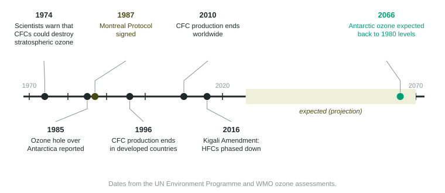

Ozone depletion is a global problem: CFCs released in one country destroy ozone over another continent. Solving it took a global agreement. This page covers the Montreal Protocol, the chemicals that replaced CFCs and their tradeoffs, why recovery is slow, and how to write a policy answer that scores.
The Montreal Protocol
In 1974, chemists warned that CFCs could destroy stratospheric ozone. In 1985 the Antarctic ozone hole was reported. Two years later, in 1987, countries signed the Montreal Protocol on Substances that Deplete the Ozone Layer. It set a schedule to phase out the production and use of CFCs, halons, carbon tetrachloride, methyl bromide and other ozone-depleting substances.

Several features made it work:
- Firm deadlines. Developed countries ended CFC production by 1996, and developing countries by 2010.
- Help for developing countries. They got extra years and a fund (the Multilateral Fund) to pay for switching to safer chemicals.
- Universal membership. Every member of the United Nations has ratified it, the first treaty to reach that.
- Updates as science improved. The schedule was tightened several times, and in 2016 the Kigali Amendment added HFCs.
Replacements and their tradeoffs
| Chemical | Contains chlorine? | Destroys ozone? | Traps heat? | Status |
|---|---|---|---|---|
| CFCs | yes | strongly | strongly | phased out worldwide by 2010 |
| HCFCs | yes, less of it reaches the stratosphere | a little (a few percent to about a tenth as much as CFCs) | strongly | phased out in developed countries by 2020 (a small servicing allowance to 2030) and in developing countries by 2030 (allowance to 2040) |
| HFCs | no | no | many are very strong, hundreds to thousands of times CO₂ | phased down under the Kigali Amendment |
| Hydrocarbons (isobutane, propane), ammonia, CO₂ | no | no | very little | used in many new refrigerators and systems |
Each step solved one problem and sometimes created another. HCFCs were a bridge: they break down more in the lower atmosphere, so less chlorine reaches the ozone layer, but some still does. HFCs fixed the ozone problem completely but turned out to be powerful heat-trapping gases. The newest refrigerants avoid both problems, though hydrocarbons are flammable and ammonia is toxic, so equipment must be designed for them.
Why recovery is slow
CFCs last 50 to 100 years or more in the atmosphere, and each chlorine atom they release destroys many ozone molecules. So the ozone hole stopped growing around 2000 but has shrunk only slowly. The 2022 scientific assessment by the UN Environment Programme and the World Meteorological Organization expects ozone to return to 1980 levels around 2040 for most of the world, around 2045 over the Arctic and around 2066 over Antarctica.
A remaining source is the "bank" of CFCs still sealed in old refrigerators, air conditioners and foam. When these are scrapped without capturing the refrigerant, the gas escapes.
Calculating the change
Worked example. A country used 120,000 metric tons of CFCs a year before the Montreal Protocol and 6,000 metric tons a year a decade later. What was the percent change?
Setup:
Answer: , a 95% decrease. Divide by the old value, and keep the minus sign to show it fell.
Writing a policy answer
When a question asks for a policy, name a law, rule, tax or treaty, not a machine. "Refrigerant recovery machines" is a technology. "A law requiring scrapyards to capture refrigerant before crushing old appliances" is a policy. Then say how it works: capturing the refrigerant keeps the CFCs out of the air, so they never reach the stratosphere to release chlorine. Readers give the point for the policy and another for how it helps.
The Montreal Protocol itself is the model answer for a treaty: it is international, it sets deadlines, and it works by stopping the production of the chemicals at the source.